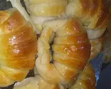

Ingredientes
- 1 k harina 000
- 50 gr levadura
- 200 gr manteca o margarina
- 200 gr azúcar
- 1 huevo
- Esencia de vainilla
- 200 ml leche
- Almíbar (partes iguales de agua y azúcar)
- 1 huevo para pincelear (opcional)
|
Fermentar la levadura: desgranar el cubo de levadura junto con agua y una cucharada de azúcar y harina..
Mezclar la manteca (pomada) y el azúcar, hasta obtener una mezcla cremosa, luego agregar el huevo, una pizca de sal y una cucharada de esencia de vainilla
Luego de integrar, volcar la leche junto con el resultado de la fermentación de levadura.. batir un poco. Después, agregar de a poco la harina, hasta tener una masa homogénea y suave. Dejar leudar 45 min.
Estirar la masa y formar triángulos para hacer la forma de las medialunas.
Dejar leudar unos 30 minutos más.
Cuando ya se hayan leudado, poner a calentar el horno a 160°, y pincelear con huevo. Llevar al horno, durante 40-50 minutos.
Preparar el almíbar, y retirar las medialunas cuando tengan el dorado que más les guste. Y a comer!!!!!!
|

|